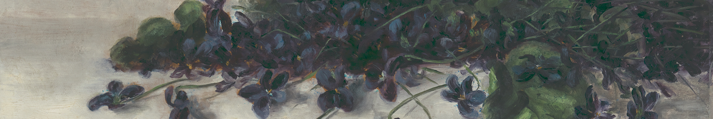

Politely scraping Wikipedia tables

Wikipedia is such an amazing website, and also a fantastic source of data for analysis projects. I often find myself scraping Wikipedia’s tables for information and then cleaning and using the data for whatever I am working on.
However, scraping a website can create issues if not done properly. Though not required, I like to use the {polite} package to introduce myself to the website and ask for permission to scrape.
Recently, I submitted the Wikipedia table on independence days around the world to TidyTuesday - resulting in many beautiful and creative visualizations from the R Community! This post walks through how to “politely” scrape the table and pull it into a flat data frame so that it’s ready for use.
Load packages
There are several packages needed for this walkthrough:
# To clean data
library(tidyverse)
library(lubridate)
library(janitor)
# To scrape data
library(rvest)
library(httr)
library(polite)Scrape table
First, we save the web page with the table that we would like as url:
url <- "https://en.wikipedia.org/wiki/List_of_national_independence_days"Next, we use polite::bow() to introduce ourselves to the host, Wikipedia. This reads the rules from robots.txt and makes sure we follow them. The object (url_bow in this case) is saved as an object of class polite.
url_bow <- polite::bow(url)
url_bowNext, we actually ‘scrape’ (pull the content of) the web page using polite::scrape(). This needs an object of class polite (created with bow() from before).
Since we politely scraped the entire web page, we want to use {rvest} to specify what exact content we’d like to pull out. We can do this using html_nodes().
How do we know which node we want? There are probably other ways of doing this. As a Firefox and Mac user, I click Cmd + Shift + C which opens up the Developer Tools so that I can select a specific element from the web page. I hover over the table to determine what the HTML is called, in this case, table.wikitable.
This object is saved as an HTML table which is great, but a data frame would be preferable for analysis. So the final step is to use rvest::html_table() to read this table as something with which we can use tidyverse tools. The parameter fill = TRUE allows you to fill empty rows with NA.
ind_html <-
polite::scrape(url_bow) %>% # scrape web page
rvest::html_nodes("table.wikitable") %>% # pull out specific table
rvest::html_table(fill = TRUE) Flatten table
You will notice that ind_html is saved as a single object (a list) in which each element is a data frame. If we want to convert it to a flat data frame, we can specify that we want the content from only the first element [[1]]. We can then use janitor::clean_names() for nice, standardized column names.
ind_tab <-
ind_html[[1]] %>%
clean_names()That’s it! Now we’ve “politely” scraped the Wikipedia table into an analysis-ready data frame.
Conclusion
Additional steps to clean the file can be found in my GitHub repo. After doing so, I submitted to #TidyTuesday by submitting an issue on their page. Then they approved and shared the dataset!
This was a very quick walkthrough. I recommend Ryo Nakagawara’s blog post on politely scraping websites, especially if you would like (1) more in-depth explanations of what {polite} does and (2) more complex scraping examples.
Which Wikipedia table will you analyze next?
📢 A short blog post on how to "politely" scrape a Wikipedia table using #rstats. Which page will you scrape next?!https://t.co/cTIy8UIFKm
— Isabella Velásquez (@ivelasq3) July 27, 2021